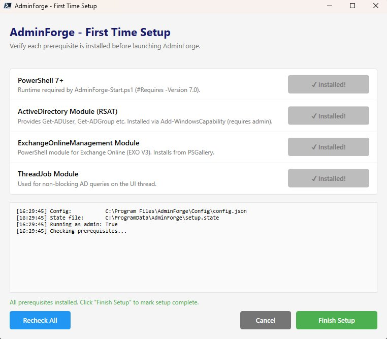

01 · First-time setup
Bootstrap a fresh machine in under a minute.

Problem: AdminForge depends on PowerShell 7, the RSAT ActiveDirectory module, ExchangeOnlineManagement, and ThreadJob. Walking each new user through these installs — including the RSAT step that requires admin elevation via Add-WindowsCapability — meant a half-day onboarding session for every fresh device.
Solution: A setup wizard that ships alongside the app. Auto-elevates to admin at startup. Checks each prerequisite, surfaces an orange “Install Now” per row, flips to green “Installed!” once verified. On completion it writes a setup.state file to ProgramData and re-targets the Start Menu shortcut from powershell.exe to pwsh.exe so subsequent launches go straight into PS7.